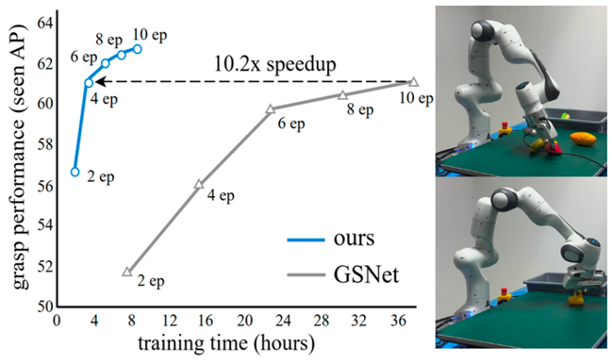

|
Xiao-Ming Wu 伍晓鸣 M.S. student School of Computer Science and Engineering Sun Yat-sen University Email: wuxm65@mail2.sysu.edu.cn |
BiographyI'm currently a third-year master student at Sun Yat-sen University (2022.09-now), advised by Prof. Wei-Shi Zheng, where I develop a good research ability and a nice taste of it. Previously, I obtain my B.E. degree in Shandong University (2018.09-2022.06, with GPA ranking 1/354 in grade). At that time, I had my first attempt on scientific research and cultivate the interest in it, advised by Prof. Xin-Shun Xu and Associate Prof. Xin Luo. I was fortunate to visit Macquarie university (2024.06-2024.12), completing a fulfilling research journey with Prof. Longbing Cao. |
Research InterestsResearch is for curiosity and fun. Now I am mainly interested in the areas of Robotic Manipulation, Self-Supervised Learning and Generative Modelling. Previously, I have also participated in various computer vision areas, such as robotic grasping, model compression, hashing retrieval, image restoration, stereo matching, privacy detection, and anomaly detection, which has significantly broadened my horizons. |
News➤ [2025-01] One paper accepted in ICRA 2025. ➤ [2025-01] One paper accepted in IJCV. ➤ [2024-12] One paper accepted in AAAI 2025. ➤ [2024-11] One paper accepted in RA-L (My co-first author work MotionGrasp). ➤ [2024-09] One paper accepted in NeurIPS 2024. ➤ [2024-09] One paper accepted in CoRL 2024. ➤ [2024-07] One paper accepted in ACM Multimedia 2024. ➤ [2024-07] One paper accepted in ECCV 2024 (My first-author work EconomicGrasp). ➤ [2024-02] Three papers accepted in CVPR 2024. ➤ [2023-07] One paper accepted in ICCV 2023 (My first-author work ReSTE). ➤ [2023-02] One paper accepted in CVPR 2023. ➤ [2022-02] One paper accepted in Pattern Recognition. ➤ [2021-12] One paper accepted in AAAI 2022 (my first-author work OASIS). |
PublicationsBelow are my publications. (& means equal contribution, * refers to corresponding author.) |

|
DiffuVolume: Diffusion Model for Volume based Stereo Matching.
Dian Zheng, Xiao-Ming Wu, Zuhao Liu, Jingke Meng, Wei-Shi Zheng*. International Journal of Computer Vision (IJCV), 2025. paper / code (Stereo Matching) Boost your stereo matching methods with our lightweight, plug-and-play DiffuVolumeüòÄ. |
|
MotionGrasp: Long-Term Grasp Motion Tracking for Dynamic Grasping.
Nuo Chen&, Xiao-Ming Wu&, Guo-Hao Xu, Jian-Jian Jiang, Zibo Chen, Wei-Shi Zheng*. IEEE Robotics and Automation Letters (RA-L), 2024. paper / code (Dynamic Grasping) Track and grasp the moving objects with grasp motionüêá. |
|

|
Grasp as You Say: Language-guided Dexterous Grasp Generation.
Yi-Lin Wei, Jian-Jian Jiang, Chengyi Xing, Xiantuo Tan, Xiao-Ming Wu, Hao Li, Mark Cutkosky, Wei-Shi Zheng*. Neural Information Processing Systems (NeurIPS), 2024. page / paper / code (Dexterous Grasping) Guide dexterous grasping with what you sayüéôÔ∏è. |
|  |
An Economic Framework for 6-DoF Grasp Detection.
Xiao-Ming Wu&, Jia-Feng Cai&, Jian-Jian Jiang, Dian Zheng, Yi-Lin Wei, Wei-Shi Zheng*. European Conference on Computer Vision (ECCV), 2024. paper / code (6-DoF Grasping) Speed up your 6-DoF grasping training 10x without performance dropüöÑ. |

|
Selective Hourglass Mapping for Universal Image Restoration Based on Diffusion Model.
Dian Zheng, Xiao-Ming Wu, Shuzhou Yang, Jian Zhang, Jian-Fang Hu, Wei-Shi Zheng*. IEEE Conference on Computer Vision and Pattern Recognition (CVPR), 2024. paper / code (Image Restoration) Hourglass diffusion is a good way for universal image restorationüåÜ. |

|
Dexterous Grasp Transformer.
Guo-Hao Xu&, Yi-Lin Wei&, Dian Zheng, Xiao-Ming Wu, Wei-Shi Zheng*. IEEE Conference on Computer Vision and Pattern Recognition (CVPR), 2024. paper / code (Dexterous Grasping) Generate a diverse set of feasible dexterous grasp only in one passü¶æ! |

|
Estimator Meets Equilibrium Perspective: A Rectified Straight Through Estimator for Binary Neural Networks Training.
Xiao-Ming Wu, Dian Zheng, Zuhao Liu, Wei-Shi Zheng*. IEEE International Conference on Computer Vision (ICCV), 2023. paper / code (Binary Neural Networks) Simple and effective gradient estimator for binary neural network trainingü§©! |

|
Online Enhanced Semantic Hashing Towards Effective and Efficient Retrieval for Streaming Multi-Modal Data.
Xiao-Ming Wu, Xin Luo*, Yu-Wei Zhan, Chen-Lu Ding, Zhen-Duo Chen, Xin-Shun Xu. AAAI Conference on Artificial Intelligence (AAAI), 2022. paper / code (Hashing Retrieval) New benchmark and baseline for online multi-modal hashingüôå. |
Services and Activities
Journal Reviewer:
IEEE Transactions on Pattern Analysis and Machine Intelligence (TPAMI)
Pattern Recognition (PR)
Conference Reviewer:
IEEE International Conference on Computer Vision (ICCV) 2025
IEEE Conference on Computer Vision and Pattern Recognition (CVPR) 2024, 2025
ACM Multimedia (MM) 2024, 2025
IEEE International Conference on Multimedia&Expo (ICME) 2025
|
Honours and Awards
First Prize Scholarship of Sun Yat-Sen University for Graduate Student (中山大学硕士研究生一等奖助金), 2022, 2023, 2024.
National Scholarship of China for Graduate Student (研究生国家奖学金), 2023.
Honorable Bachelor Degree of Shandong University (山东大学荣誉学士学位), 2022.
Excellent Graduate in Shandong University (山东大学优秀毕业生), 2022.
Excellent Graduation Thesis of Shandong University (山东大学优秀毕业论文), 2022.
National Scholarship of China for Undergraduate Student (本科生国家奖学金), 2019, 2021.
First Prize Scholarship of Shandong University for Undergraduate Student (山东大学本科生一等奖学金), 2019, 2020, 2021.
Three Good Student of Shandong University (山东大学三好学生), 2021
|